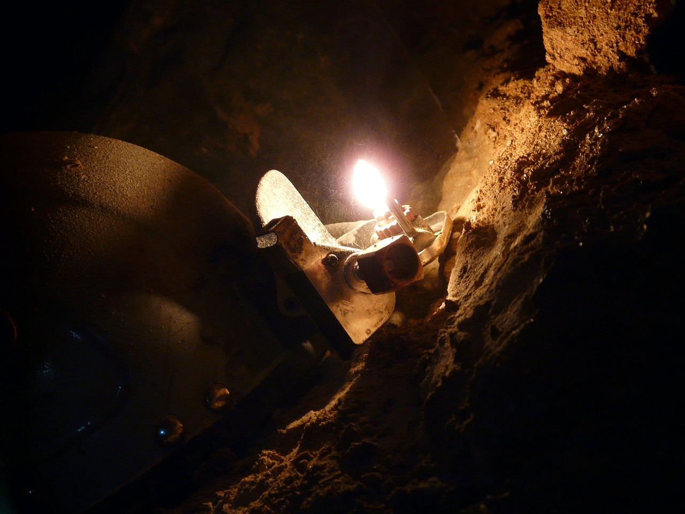

호남 차량용 반도체, 소부장 1700억 실탄 받는다

산업부는 2026년 소부장 투자지원금을 기존 1200억 원에서 1700억 원으로 확대하고, 지원 대상 첨단전략산업을 기존 4개에서 반도체·디스플레이·이차전지·첨단모빌리티·바이오·항공우주 6개 분야로 늘렸다. 투자액의 50%를 중소·중견기업에 직접 지원하는 구조다.
호남 반도체 클러스터는 이번 정책 재편에서 차량용 반도체 소재로 특화 방향이 공식화됐다. 차량용 반도체는 2025년 글로벌 시장 규모 약 680억 달러로, 2030년까지 연평균 8.5% 성장이 예상되는 구간이다. 국내 차량용 반도체 소재 자급률은 현재 15% 미만으로 추정된다.
2019년 일본 수출규제 이후 소부장 정책에 누적 투입된 예산은 4조 원을 넘어섰으나, 차량용 전력 반도체 핵심 소재인 SiC(실리콘카바이드) 웨이퍼 국산화율은 2025년 말 기준 5% 수준에 머문다. SKC, 네오세미테크 등이 SiC 웨이퍼 양산에 진입했지만 품질 인증 통과 기업은 아직 2곳에 불과하다.
이재명 대통령이 선언한 '반도체·AI·데이터센터 삼각축' 1600조 원 메가프로젝트와 연계해 한국판 국부펀드(2027년 출범 예정)도 차량용·AI 반도체 소재에 장기 투자 비중을 높일 계획이다. 정책 실행력은 펀드 운용 거버넌스 구조가 확정되는 2026년 4분기가 분기점이 된다.
이번 지원 확대의 핵심은 '지원 업종 확대'가 아니라 '지역 특화 방향 명시'에 있다. 호남을 차량용으로 못 박은 것은 수도권·충청 중심 메모리·파운드리 클러스터와의 역할 분리를 공식화한 것이다. 지역 클러스터가 명확한 수요처(완성차·전장 업체)와 연결되지 않으면 예산 집행 후에도 수주 공백이 반복되는 구조다.
SiC 소재는 중국이 글로벌 생산의 약 80%를 차지하는 또 다른 의존 취약 품목이다. 차량용 반도체 소재 특화를 선언한 이상, SiC 웨이퍼→에피 웨이퍼→파워 디바이스로 이어지는 수직 계열화 없이 단순 소재 공급만으로는 밸류체인 편입이 불가능하다. 1700억 원이 수직 계열화 투자에 집중되느냐, 개별 기업 운영자금으로 분산되느냐가 실효성을 가른다.
글로벌 완성차 업체의 '중국산 부품 퇴출' 기조와 맞물려 한국 차량용 소재 기업의 대미·대유럽 진출 창이 열리고 있다. 제네럴모터스·포드는 2026년 말까지 중국산 전장 부품 비중을 30% 이상 축소하겠다고 발표한 상태다. 호남 클러스터가 이 수요를 흡수하려면 미국 IATF 16949 인증 보유 기업 수가 관건이다.
SKC·네오세미테크 등 SiC 웨이퍼 선행 진입 기업은 정책 자금과 수요 확대가 동시에 작동하는 구간에 있다. SKC는 2025년 SiC 웨이퍼 월 3000장 생산체제를 구축했으며, 2027년 월 1만 장 목표로 증설 중이다.
차량용 반도체 후공정 소재(봉지재·언더필·열계면소재) 분야의 중소기업들은 이번 지원 확대로 설비 투자 비용의 50%를 보전받을 수 있다. 덕산네오룩스·솔브레인 계열사처럼 전장용 소재 라인을 이미 구축한 기업이 초기 수혜 포지션이다.
호남 클러스터 내 장비 기업도 수혜권에 들어온다. 차량용 반도체는 메모리 대비 소량·다품종 구조여서 유연 생산 설비 수요가 높다. 국내 반도체 장비사 피에스케이·테스나 등이 차량용 테스트·패키징 장비 공급 기회를 선점할 수 있다.
SiC 소재 국산화 속도가 더딘 사이, 일본 로옴(ROHM)과 독일 인피니언이 한국 완성차 업체의 차량용 SiC 모듈 공급망을 선점하고 있다. 현대차그룹의 아이오닉 플랫폼용 SiC 인버터 모듈 공급사는 2025년 기준 여전히 인피니언·온세미컨덕터 비중이 70% 이상이다.
정책 지원이 특정 지역·분야로 집중되면서 범용 소부장 중소기업은 지원 우선순위에서 밀릴 수 있다. 6개 분야 외 광학소재·세라믹 소재 업체들은 이번 확대 혜택에서 사실상 배제된다.
차량용 반도체 소재 투자를 검토 중인 기업이라면 IATF 16949 인증 취득 여부를 최우선 점검해야 한다. 완성차 1차 벤더에 납품하려면 인증 없이는 협상 테이블조차 오르지 못한다. 인증 취득에 통상 18~24개월이 소요되므로 2026년 말까지 착수해야 2028년 납품 사이클에 진입할 수 있다.
SiC 웨이퍼 투자를 고려하는 투자자라면 단순 생산량(장/월)보다 에피 웨이퍼 전환율과 결함 밀도(defect density) 수치를 추적해야 한다. 차량용 인증 기준인 결함 밀도 1cm² 이하를 달성한 국내 기업은 현재 1곳에 불과하며, 이 수치가 공시나 IR에 등장하는 시점이 실질 투자 진입 신호다.
실제 조달 현장에서는 — 차량용 소재 바이어들이 단가보다 '공급 연속성 보증'을 먼저 요구하는 패턴이 뚜렷해지고 있다. 일본 소재 업체와 계약할 때 표준으로 쓰이던 24개월 장기공급협약(LTA) 방식이 한국 중소 소재사에도 요구되기 시작했다. 생산 능력 인증서보다 재고 버퍼 운영 계획서와 대체 공급선 명시가 계약 조건에 포함되는 사례가 늘고 있으니, 조달 문서 체계를 선제적으로 갖춰둬야 한다.
이 포스팅은 쿠팡 파트너스 활동의 일환으로 수수료를 제공받습니다.